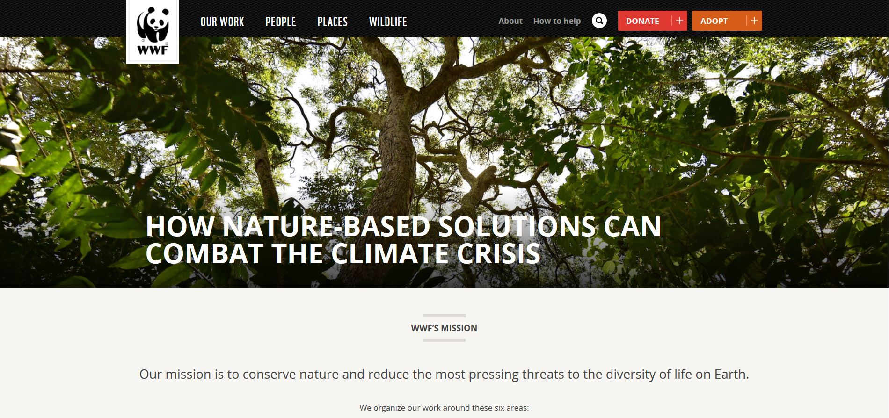

Website Emulation Tutorial

For my first blog post, I chose to emulate the World Wildlife Fund website in my way through a more simplified bit of code and design in which it doesnt look exactly like the actual website. Too code for this website, i first looked at the actual websites code (inspect element) and saw how they structured and used css to design the layout for thier website which i took and adapted of to make my mimiced one. This is my process below..
Before i started to code the major bits of this website, i first stareted by codig the basic bits which was just the original box model for which would hold the content for my website..
After building my box model for the layout, i started by going from top to bottom of the wwf website and trying to construct its elements. For the slideshow there was two parts in which the first part i just made the dic, added the images and postitioned the slideshow.
Part 2 of making the slideshow consisted of me having to style the slideshow and use a script in which the jquey slidehsow needs to transition and run. I did this by going to w3 schools and finding the javascript files for the slideshow in which there was two - one that needed to be saved as a separate Js file (and added to the html page), and one that provided a whole script for the slideshow to run which i linked to my slideshow using the script src tag.
After the slideshow, i went on to the body of the page in which i created the links used to go to inter wwf pages. Again i started by first making a separate div for this section and also made separate divs for each image so i could position them in the right way without contradiction.
I then went on to create the links for the images which i displayed above them like the wwf website did. to make it more obvious they were links, i added a hover decoration of underline in which helps the user know that it is a clickable link.
After building the element above for my website, doing this part was fairly easy in which i follwed the same process and techniques to build the news articles however i also added an opacity element to make sure users lso know that the articles are clickable. I also had to figure out how to make the text appear on the image and i did this by changing the z-index (acts as 'bring to front') and changed the position of relative and absolute so the text can be seen before the image.
Link to page-->
{kind=link}
{kind=link}
{kind=link}
{kind=link}
{kind=link}
{kind=link}